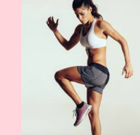
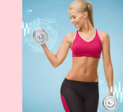
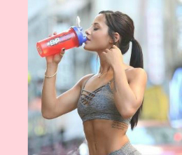

News in fitness
| У Львові "замінували" 4 фітнес-клубу У Львові правоохоронці перевіряють повідомлення про замінування чотирьох будівель фітнес-клубів. Про це повідомляє прес-служба поліції Львівської області. | Як швидко схуднути: комплекс по системі Табата «Табата - це вид енергійної аеробного тренування, яка запускає інтенсивні жиросжигательние процеси на цілу добу. Тобто потренувавшись, вже через годину ви можете дозволити собі печиво або шоколад. Головне, не захоплюватися », - зазначає фітнес-коуч Юлія Кудлюк. | Фітнес: топ-вісім помилок новачків «Новобранці» фітнес-клубів в більшості впевнені, що знають, з якою метою вони прийшли і як правильно її досягти. Однак в процесі тренувань і їх планування припускаються помилок, які можуть коштувати гарного самопочуття і красивої фігури. | Кому не варто їхати в фітнес-тур? Фітнес-тур обіцяє привести фігуру і самопочуття в норму за вкрай короткий термін - близько двох тижнів. Але на цей час вам потрібно бути готовими до виснажливих тренувань і повної зміни режиму харчування, що готовий витримати не кожен організм. |